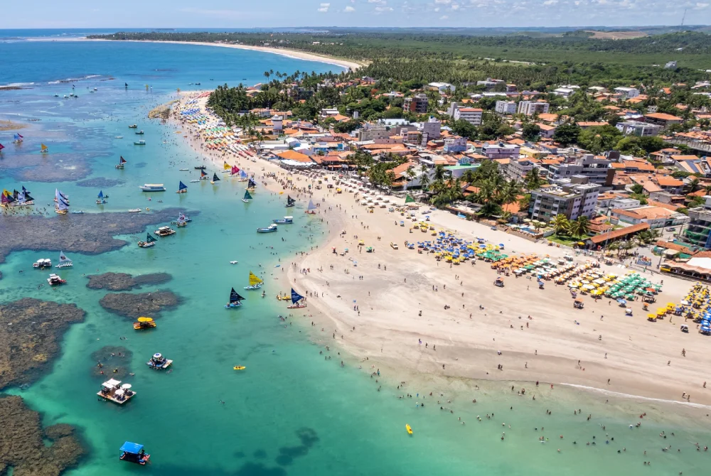

CULINÁRIA NORDESTINA
Uma das mais famosas iguarias do Nordeste!
A culinária nordestina é uma das mais ricas do Brasil, com pratos como buchada de bode, sarapatel, carne de sol, feijão verde, e muito mais. Cada estado tem suas especialidades e ingredientes típicos.
FESTAS POPULARES
As festas mais animadas do Brasil!
O Nordeste é conhecido por suas festas populares, como o São João, Carnaval de Salvador, Bumba Meu Boi, e muitas outras. Cada festa tem sua história e tradições únicas.
MÚSICA NORDESTINA
Ritmos tradicionais, 1 de Março, 2024
Os ritmos que fazem o Brasil dançar!
O Nordeste é o berço de diversos ritmos musicais brasileiros. O forró, com suas origens no século XIX, é um dos mais conhecidos. Outros ritmos importantes incluem o baião, xote, xaxado, coco e maracatu. Grandes nomes como Luiz Gonzaga, Dominguinhos e Alceu Valença ajudaram a popularizar esses ritmos pelo Brasil.
ARTESANATO
Arte feita com as mãos!
O artesanato nordestino é rico e diversificado. A renda de bilro do Ceará, o barro de Caruaru, as bonecas de barro do Mestre Vitalino, e as redes de dormir são apenas alguns exemplos do artesanato tradicional da região. Cada estado tem suas técnicas e materiais específicos.
LITERATURA DE CORDEL
Histórias em versos!
A literatura de cordel é uma manifestação cultural típica do Nordeste. Os folhetos, pendurados em cordas (daí o nome "cordel"), contam histórias em versos, muitas vezes acompanhadas de xilogravuras. Autores como Leandro Gomes de Barros e Patativa do Assaré são referências nesse gênero.
PRAIAS PARADISÍACAS

Praia de Porto de Galinhas
As mais belas praias do Brasil!
O Nordeste possui algumas das mais belas praias do Brasil. Porto de Galinhas em Pernambuco, Praia do Forte na Bahia, e Jericoacoara no Ceará são apenas alguns exemplos. Com águas mornas e cristalinas, essas praias atraem turistas do mundo todo.
GASTRONOMIA DOCE
Sobremesas tradicionais, 25 de Fevereiro, 2024
Doces que contam histórias!
A doçaria nordestina é uma verdadeira delícia! O bolo de rolo de Pernambuco, o pé de moleque, a cocada, o queijo coalho com mel de engenho, e o cartola (banana frita com queijo e canela) são algumas das sobremesas típicas que fazem sucesso em toda a região.